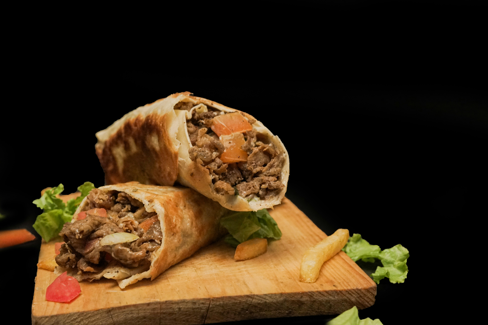

HOME
SHAWARMA RECIPES

Description
Shawarma is a popular Middle Eastern street food made from thinly sliced marinated
meat—such as chicken, beef, or lamb—that is stacked on a vertical
rotisserie and slowly roasted until tender and flavorful.
The meat is shaved off in thin pieces and wrapped in soft
flatbread, often along with fresh vegetables like lettuce,
tomatoes, and cucumbers, and finished with creamy sauces such
as garlic sauce or tahini. Known for its rich spices, juicy texture, and satisfying combination of flavors, shawarma has
become a widely loved dish across many regions, including
Nigeria, where it is commonly enjoyed as a quick and tasty
meal.
Ingredient
- 500g chicken (or beef), thinly sliced
- 3 tbsp plain yogurt
- 2 tbsp vegetable oil
- 3 cloves garlic (minced)
- 1 tsp paprika
- 1 tsp cumin
- 1 tsp coriander
- ½ tsp turmeric
- 1 tsp black pepper
- 1 tsp black pepper
- Juice of 1 lemon
Steps
- Slice the meat thinly – the thinner, the better for that authentic texture.
- Coat with oil – helps the spices stick.
- Rub with spice mix – coat generously and let it marinate for at least 1 hour (overnight is best).
- Thread onto skewers (optional but traditional).
- Grill over charcoal (best) or use an oven/grill pan. Turn occasionally.
- Brush lightly with oil while grilling for extra juiciness.
- Sprinkle extra spice after grilling for that classic finish.
Photo by Bayuaji Abiyu on Unsplash